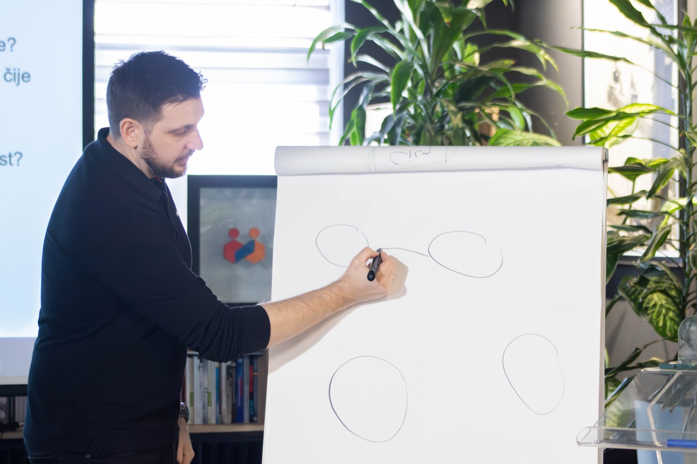
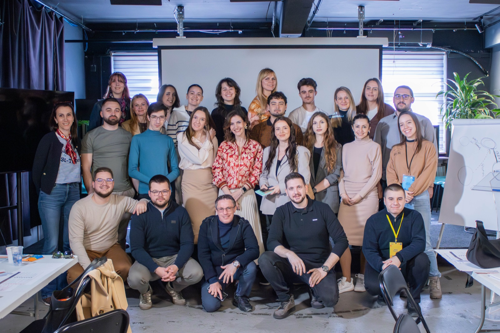
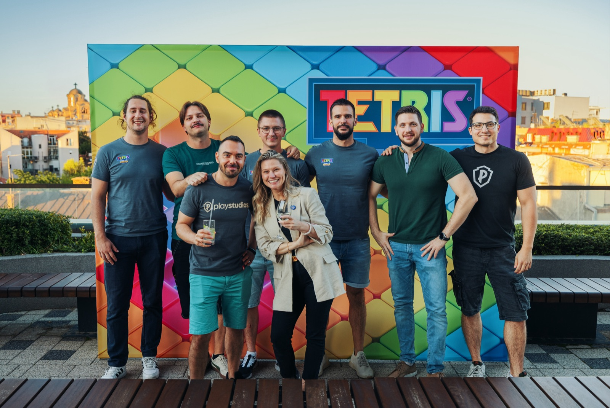

Firma koja radi i kad nisi u svakom razgovoru.
Za vlasnike agencija i digitalnih uslužnih biznisa kojima posla ima, ali sve prolazi kroz njih. Posle mape postavljamo sistem: pravila isporuke, odgovornosti, alate i ritam praćenja. Cilj je više kapaciteta sa istim timom i manje odluka koje čekaju tebe.
Program počinje Mapom uskih grla. Iznos radionice se odbija od prvog meseca.

Ne učiš teoriju. Postavljaš sistem.
Godinama sam držao radionice timovima i liderima. Ljudi izađu puni ideja, a za šest nedelja sve stoji. Znanje bez sprovođenja nije sistem.
Zato ovaj program ne ostavlja dokument u fioci. Svaki mesec se završava nečim što radi u tvojoj firmi, na tvojim klijentima, sa tvojim ljudima. Radimo na tvojim brojkama i tvojoj mapi, ne na opštim primerima.
U grupi ti sprovodiš promenu, a ja vodim, proveravam i ispravljam. U 1:1 formatu promenu sprovodim ja sa tvojim timom, a ti donosiš odluke.

Šta postavljamo, mesec po mesec
Redosled tema može da se pomeri posle prvih rezultata. Uvek radimo prvo na onome što drži sve ostalo.
- Cilj za narednih 12 meseci i kako znaš da je posao bolji, ne samo veći
- Mapa celog toka, od upita do preporuke, sa trajanjem i čekanjem
- Jedno usko grlo i tri prioriteta
- Početna merila: kapacitet, kašnjenja, dorade, tvoji sati u operativi
- Tvoja nedelja: kalendar koji štiti vreme za rad na firmi
Na kraju prvog meseca znaš gde se gubi kapacitet i šta menjaš prvo.
- Kada je posao spreman za početak, a kada je stvarno gotov
- Kriterijumi koje klijent prihvata, da dorade prestanu da budu pravilo
- Uloge i granice odgovornosti: ko šta odlučuje bez tebe
- Pravila eskalacije: šta tim rešava sam, a šta stiže do tebe
- Delegiranje odluka, ne samo zadataka
Na kraju drugog meseca manje pitanja i poruka ide kroz tebe.
- Automatizujemo samo ono što je jasno i što se ponavlja
- Upit i kvalifikacija, uvođenje klijenta, statusi klijentima, izveštaji
- Jedno mesto gde se vidi tok posla, bez gomile alata
- AI tamo gde skraćuje čekanje, a ne gde dodaje posao
Na kraju trećeg meseca ručno ponavljanje se smanjuje, a ti ne juriš statuse.
- Nedeljni pregled od 30 minuta: šta je planirano, šta se desilo, šta menjamo
- Očekivano naspram stvarnog: kapacitet, kašnjenja, opterećenje tima
- Koliko ti donosi jedan dan rada po usluzi, a ne samo marža
- Provera spremnosti za narednu fazu rasta
Na kraju imaš ritam koji tim drži i kad ti nisi tu.
Tvoj biznis, ne opšti primeri
Mapa uskih grla na startu
Program počinje radionicom. Bez mape ne znamo šta je prvo, pa ne krećemo bez nje.
Sesija svake nedelje
Prolazimo šta si postavio, gde je zapelo i šta je sledeći korak za tvoju firmu.
Podrška između sesija
Pitanje ne čeka sledeći termin. Odgovor u chatu dobijaš u roku od 24 sata.
Šabloni i čekliste
Pravila isporuke, uvođenje klijenta, nedeljni pregled. Prilagođavaš ih, ne pišeš od nule.
Uključen tim
Promena koju tim ne razume ne traje. Tim učestvuje u mapi i u pravilima koja će poštovati.
Brojke, ne osećaj
Pratimo kapacitet, čekanja, dorade i tvoje sate u operativi, da znaš da li se nešto stvarno pomera.
Različiti biznisi. Isto usko grlo: vlasnik.
AutoFlow, agencija od pet ljudi koja radi automatizacije. Marža je porasla sa 44% na 66%, bez zapošljavanja novih ljudi.
Program je za tebe ako
- vodiš agenciju ili digitalni uslužni biznis i posla ima, ali ne možeš da primiš više bez novih ljudi
- statusi, zahtevi i odluke idu direktno tebi
- ljudi ne isporučuju istom brzinom i kvalitetom, a klijenti to primećuju
- možeš da odvojiš 2 h nedeljno za grupnu sesiju i 1 do 3 h za rad na svojoj firmi
Nije za tebe ako
- ti je glavni problem to što nema upita ili tražiš marketing od nule
- tražiš nekog da ti samo podesi alat
- ne želiš da uključiš tim ni da pokažeš brojke
- nemaš vremena da donosiš odluke
- radiš uslugu uživo ili prodaješ fizički proizvod
Isti sistem. Ti biraš ko ga sprovodi.
Operativni sistem rasta
- 4 meseca, posle Mape uskih grla
- Ti sprovodiš, ja vodim i proveravam
- Sesija svake nedelje + chat podrška
- 2 h grupna sesija nedeljno + 1 do 3 h rada na tvojoj firmi. To nije domaći zadatak, to su sati koje vraćaš iz operative.
- Za male timove koji hoće da sprovode sami
Cenu i termin starta dobijaš na pozivu.
Operativni sistem rasta 1:1
- Oko 6 meseci, posle Mape uskih grla
- Promenu sprovodim ja, sa tvojim timom
- Tempo biramo prema tome koliko tim može da primi
- Ti učestvuješ nekoliko sati nedeljno, za odluke i odobrenja
- Za timove od 5 do 15 ljudi
Cenu dobijaš posle poziva, kad vidimo veličinu promene.
Bez obećanja koja ne mogu da ispunim
Ne obećavam procente i ne obećavam da ti nikad neće trebati novi čovek. Obećavam da ćeš znati gde se gubi kapacitet, šta menjamo prvo i kako merimo da li radi. Iznos Mape uskih grla se odbija od prvog meseca programa.
Sistem ćeš praviti u svakom slučaju. Pitanje je samo da li sada, ili posle još jednog klijenta primljenog preko kapaciteta.

Stefan Stojković
Trener sam Mokrogorske poslovne škole i licencirani Lean Change trener. Vodio sam isporuku i timove u auto industriji, IT-ju i gaming industriji, uključujući Tetris tim, gde je vreme za planiranje i usklađivanje palo za oko polovinu. Radio sam sa liderskim timovima američke proizvodne kompanije, banke iz Crne Gore i gaming studija iz Beograda.
Danas isto znanje primenjujem na agencije i digitalne biznise koji imaju 3 do 15 ljudi, gde se jedno usko grlo oseti odmah: u kašnjenju, u marži i u vlasnikovom kalendaru.
Pitanja o programu
Da li je grupa dovoljno lična za moj biznis?
Jeste. Svako radi na svojoj mapi i svojim brojkama. Grupa ti daje ljude koji rešavaju iste probleme, a povratnu informaciju dobijaš na svoj biznis.
Šta ako posle četiri meseca nismo gotovi?
Četiri meseca su dovoljna da se postavi sistem za jedno usko grlo. Ako posle toga želiš da nastaviš na sledećem, to zajedno dogovaramo. Ništa se ne produžava samo od sebe.
Kada se vide prvi rezultati?
Posle prvog meseca znaš gde se gubi kapacitet i šta menjaš prvo. Od drugog meseca manje pitanja i odluka ide kroz tebe. Pomak u brojkama (kapacitet, čekanje, tvoji sati u operativi) obično se vidi za tri do četiri meseca, a kod većih promena u timu za šest do devet.
Moram li da koristim GoHighLevel ili neki drugi alat?
Ne. Koristimo ono što imaš gde god može. Novi alat uvodimo samo kad se jasno isplati.
Kako se plaća?
Mesečno unapred za naredni mesec, ili ceo iznos unapred uz popust od 15%.